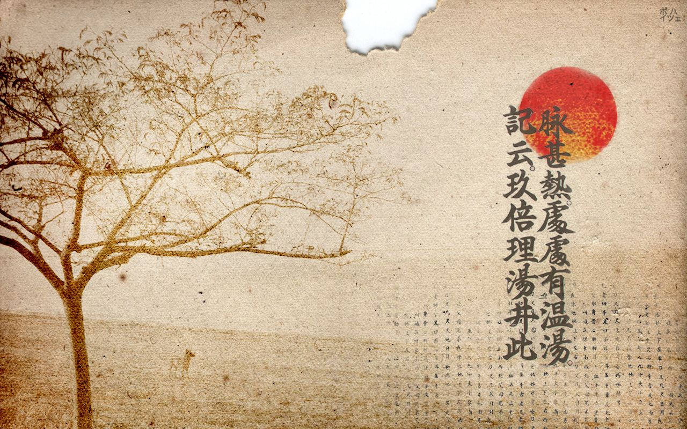

Learn about the history of Japanese Language:
History of the Japanese Language
Ancient Origins: The Japanese language has ancient roots that trace back to the Jomon period (14,000–300 BCE). However, the language's development gained momentum with the introduction of Chinese characters around the 5th century CE. These characters influenced the formation of the earliest Japanese writing systems.
Nara and Heian Periods: During the Nara period (710–794) and Heian period (794–1185), the Japanese court adopted Chinese-style governance, literature, and language. Classical Japanese, known as "Old Japanese," evolved during this time, and the earliest literary works, including the "Kojiki" and "Manyoshu," were produced.
Feudal Era: The Kamakura (1185–1333) and Muromachi (1336–1573) periods saw the rise of the samurai class and regional dialects. During this time, the Japanese writing system further developed, incorporating both kanji characters and kana scripts (hiragana and katakana).
Edo Period: The Edo period (1603–1868) brought stability and isolation, allowing the Japanese language to flourish independently. Urbanization and economic growth led to the spread of a common language and the emergence of modern dialects.
Meiji Restoration: The Meiji era (1868–1912) marked a period of modernization and Westernization. The government implemented language reforms to create a standardized form of Japanese, blending elements from various dialects. The adoption of new vocabulary and writing conventions aimed to align Japan with global standards.
20th Century and Beyond: In the 20th century, Japan experienced rapid industrialization and technological advancement. The Japanese language continued to evolve with the incorporation of loanwords from Western languages. The post-war period saw a surge in language education, and Japanese became one of the world's major languages.